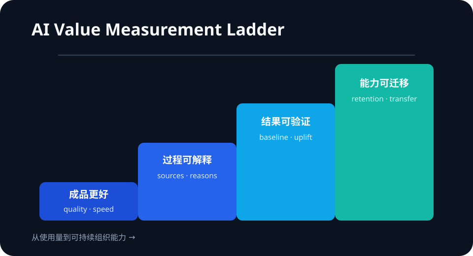

Daily Intelligence
2026-08-28｜Friday
Today’s Thesis｜今日一句话
当 AI 能迅速抬高答案的完成度，组织真正稀缺的能力会从“产出更像专家”转向“提出不同问题、解释因果并验证结果”；采用规模越大，评价体系越需要从成品质量升级为过程与增量能力的测量。
① Executive Summary｜30 秒
- AI：OpenAI 介绍一项由博科尼大学研究者与其经济研究团队合作的随机实验：超过 1,000 名学生中，ChatGPT 访问提高了作业质量与连贯性，因果推理训练则提高了想法差异度；两者结合呈现互补效果 [A1]。这是单一课程任务中的研究结果，不等于普遍教育结论。
- 商业：OpenAI 在巴西启动商业运营，并称巴西位列 ChatGPT 周活用户前三、约每天发送 2.15 亿条消息；这些为公司披露口径，显示竞争正从跨境产品可用性进入本地团队、语言、培训与机构合作的落地阶段 [B1]。
- 宏观：BEA 最新正式数据仍显示二季度实际 GDP 年化增长 1.5%、私人国内最终需求增长 4.2%；7 月实际 PCE 几乎不变、核心 PCE 同比 3.3% [M1][M2]。增长尚未失速，但高质量投资需要更清楚地证明生产率增量。
② AI Daily
好答案与好思考不是同一个指标
What Happened：在超过 1,000 名博科尼大学一年级学生参与的真实商业案例实验中，班级时段被随机分配为 ChatGPT、因果推理训练、两者兼有或两者皆无四组。公司文章称，ChatGPT 组在五分制人工评分中接近提高一分，答案更连贯、更接近专家；因果推理训练没有提高该传统评分，却带来更分散、更独特的想法 [A1]。
Why It Matters：AI 可以压缩新手到“看起来专业”的距离，但成品评分对真实理解的识别力随之下降。教育、招聘和企业绩效如果只评最终文本，可能把表达质量误认为判断质量。
Second-order Effect：生成成本下降 → 标准答案趋同且更精致 → 传统 rubric 区分度下降 → 评价转向过程证据、反事实、来源与迭代记录 → 能提出异质问题的人和组织获得更高边际价值。
研究结果需要保留边界
该实验针对一个大学营销案例，使用 GPT-4o，并由训练过的人工评分者与自动文本分析评估 [A1]。它支持“工具与思维训练可能互补”的命题，但不能直接证明长期学习迁移、所有学科效果或就业回报。正式采用前，应复制到本组织任务并测量保留、迁移和独立完成能力。
本地化成为采用的下一层基础设施
OpenAI 宣布在圣保罗设立本地商业团队，并列出教育、研究、法律职业培训、小企业培训与公共服务合作 [B1]。采用进入高频阶段后，产品翻译只是起点；本地合规、行业工作流、培训和售后支持决定使用能否变成经济产出。
③ Business Daily
评价软件：企业将需要同时测量结果质量与能力增量。更合理的基线是“无 AI 独立表现—有 AI 表现—撤除 AI 后迁移表现”，而不是只比较有无工具时的成品评分 [A1]。
国际扩张：巴西案例表明，大市场的商业化需要本地团队与机构网络。公司披露的活跃度和消息量说明需求强，但“消息数量”不是收入、生产率或社会福利的直接代理指标 [B1]。
人才与培训：通用提示词课程的价值可能下降；因果图、证伪条件、来源核验和任务拆解更接近可迁移资产。培训采购应要求行为或业务指标，而不是只统计结课率。
④ Macro Observation｜机制分析
世界正在发生什么？ BEA 二季度第二次估计显示实际 GDP 年化增长 1.5%，私人国内最终需求增长 4.2%，实际 GDI 增长 2.2%；7 月个人收入增长 0.4%、名义 PCE 增长 0.2%，实际 PCE 增幅低于 0.1%，核心 PCE 同比 3.3% [M1][M2]。
为什么发生？ [事实] 私人需求比 GDP 总量更强，但最新月度实际消费接近停滞。[推断] 企业仍有投资空间，却面对黏性通胀与更严格的资本回报要求；“部署了多少 AI”不足以支撑持续预算。
资本如何流动？ 当资本成本不低、需求信号混合时，资金会偏向能证明增量价值的项目：更短交付周期、更低错误率、更高转化或更强独立判断。只改善文本外观却没有改善决策的工具，更容易在续约时被削减。
接下来关注什么？ 观察企业是否公开 AI 使用的基线与对照组、教育机构是否调整评价标准，以及巴西本地运营能否把高频个人使用转化为企业席位、开发者收入与可验证生产率。
⑤ Signal Dashboard
| 指标 | 最新观察 | 今日 | 信号 |
|---|---|---|---|
| 学生随机实验 | 超过 1,000 人 | ↑ | 工具与因果训练效果不同 |
| ChatGPT 成品评分 | 接近 +1/5 分 | ↑ | 专业化外观提升 |
| 巴西日均消息 | 约 2.15 亿条 | ↑ | 公司披露的高频采用 |
| Q2 实际 GDP | +1.5% 年化 | → | 增长温和 |
| 核心 PCE | +3.3% 同比 | → | 通胀仍具黏性 |
⑥ Deep Insight
AI 采用的下一道门槛是“增量测量”
生成式 AI 最容易展示的价值是前后对比：同一个人用工具后，文本更完整、结构更清楚、交付更快。这是真实价值，却不等于能力已经形成。博科尼实验中的传统评分与想法差异度出现分离，提示评价函数会决定组织看见什么：只奖励标准营销目标，就可能看不见更多原创路径 [A1]。
企业中的对应风险是把“表面完成度”当成“业务判断”。当人人都能生成精致方案，方案之间更相似，决策者更难判断谁理解了约束、谁只是复述模型。于是过程证据变得重要：为什么选这个目标、排除了什么方案、哪条来源支撑假设、什么结果会推翻结论。
巴西的采用规模把这个问题放大。OpenAI 披露当地工作相关消息占比高于全球平均，并通过本地团队、院校、法律、小企业和公共部门合作扩大落地 [B1]。从产品角度看，这是分发深化；从经济角度看，下一步必须证明高频交互是否带来组织能力、收入或公共服务的净改善。
宏观环境也不允许长期回避测量。实际 GDP 温和增长、私人需求仍有韧性，但核心通胀黏性意味着资本筛选不会消失 [M1][M2]。企业可以继续投 AI，却会逐步要求更可信的对照：没有工具会怎样、工具改善了什么、错误与监督成本是多少、能力是否能迁移。
反方观点：过度强调测量会拖慢采用，而且许多协作与创意收益难以量化；单一课堂实验也无法代表复杂企业环境。
证伪条件：1. 只看最终成品评分仍能稳定预测长期独立表现；2. 因果与批判性训练在不同任务中不产生可重复的差异；3. 企业续约与扩张长期只由使用量决定，而与可验证业务增量无关。
⑦ Tomorrow Watch
1. 学校是否把来源、推理过程、反事实和口头答辩纳入 AI 时代的评价。
2. 企业 AI 项目是否报告对照基线、错误成本与撤除工具后的能力保留。
3. 研究论文是否公开完整效应量、稳健性检验与跨任务复现。
4. 巴西本地化是否带来可核验的企业收入、开发者活动与培训结果。
5. 核心通胀与实际消费组合是否继续抬高长周期 AI 项目的回报门槛。
⑧ One Chart

图表把 AI 价值测量从“成品更好”逐层推进到“过程可解释、结果可验证、能力可迁移”。越往上，越接近可持续组织能力。
⑨ Quote of the Day
“The important thing is not to stop questioning.”
— Albert Einstein
中文理解：重要的是不要停止提问。
Why it matters today：当机器能快速给出漂亮答案，持续追问假设、因果和证伪条件，反而成为人的核心增量。
⑩ Action Items｜今天值得思考什么
1. 拆分 结果质量、原创性、因果解释与独立迁移四类指标。
2. 建立 无 AI、有 AI、撤除 AI 三段式基线，避免只看使用后的成品。
3. 要求 方案附带来源、关键假设、反方观点与证伪条件。
4. 审视 使用量、消息量和席位数是否真的连接到收入、成本或质量。
5. 复测 单一课堂或厂商案例在本组织任务中的可重复性。
信息边界
本报告以 2026-08-28 07:00 Asia/Shanghai 可获得信息为截止点。学生实验与巴西采用数据均来自 OpenAI 公司页面：实验有随机设计，但本文未独立审阅完整论文及数据；巴西活跃度、消息量和商业采用数字为公司披露，未作为独立审计事实。宏观数字来自 BEA 官方发布。关于评价体系、资本流向与续约行为的内容为机制推断，不构成投资建议。